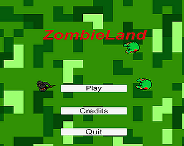

Zombieland
Slay the undead, while avoiding their cold & fatal embrace
Where it all began! My first playable .exe in unity, Winter Quarter 2019.
It was my second quarter with VGDC. I built systems like shooting and I think movement?
It's adorable and earnest in the way only "MyFirstGame.exe" can be, so it naturally needed a WebGL build too.

Controls:
- Move: WASD
- Aim: Character aims where mouse is pointing
- Shoot: LMB
- Switch weapons: Scroll wheel
(blue fullscreen button)
Itch.io Link